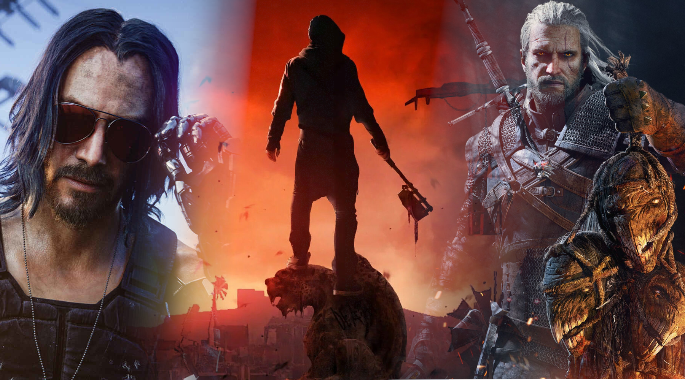
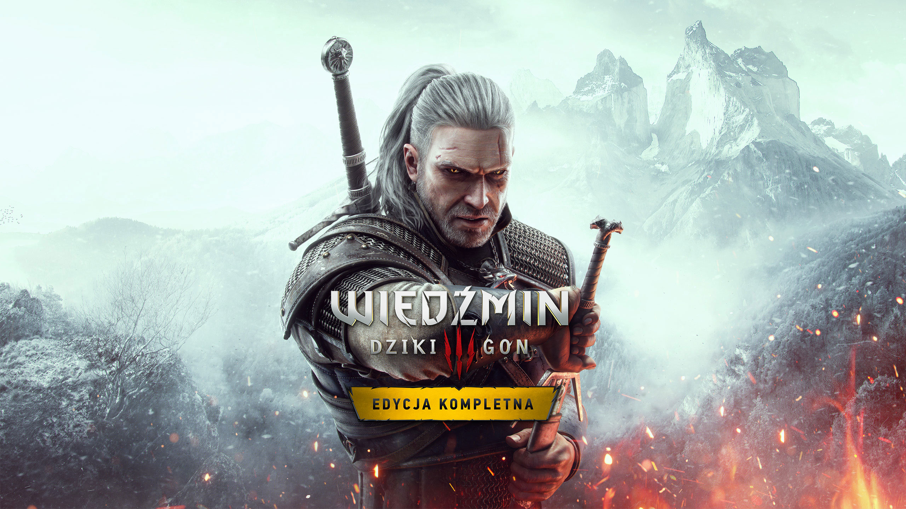
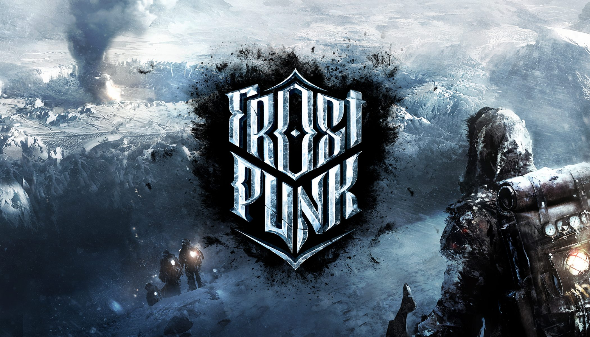
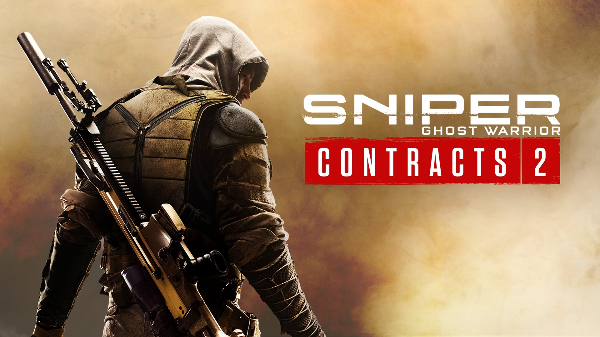
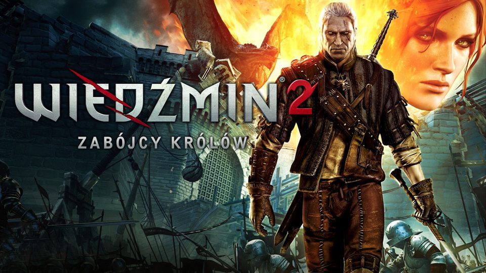
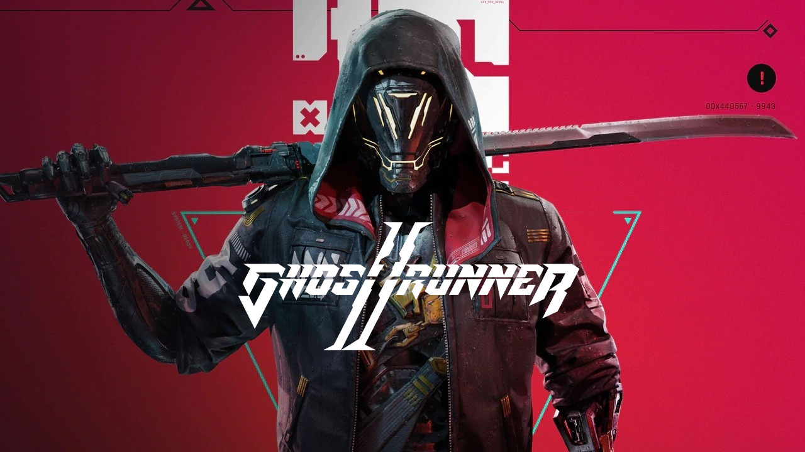
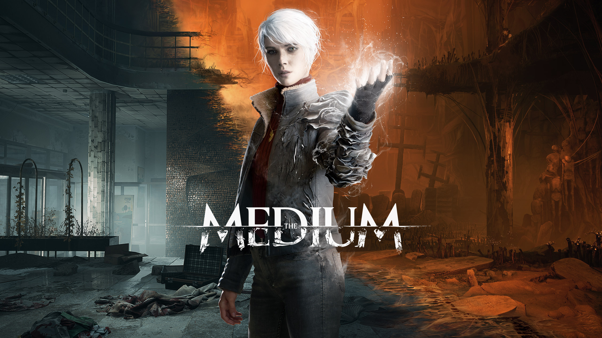
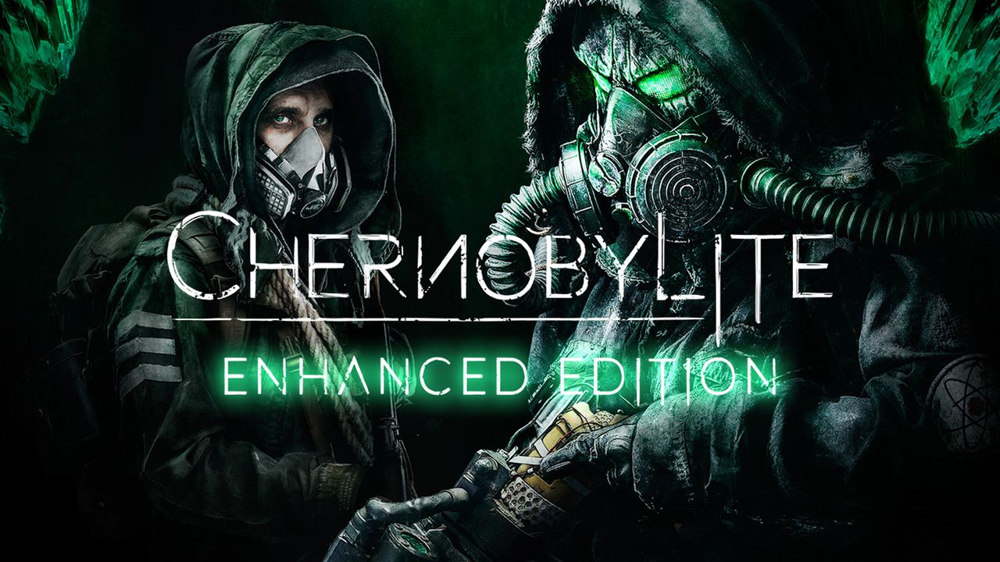

10 Najlepszych polskich gier
Wiedźmin 3: Dziki Gon
Fabularna gra akcji wyprodukowana i wydana przez CD Projekt Red 19 maja 2015 na platformy Microsoft Windows, PlayStation 4 i Xbox One. Wersja na Nintendo Switch ukazała się 15 października 2019. 14 grudnia 2022 wydano wersję przeznaczoną na platformy PlayStation 5 i Xbox Series X/S.Gra jest kontynuacją wydanego w 2007 roku Wiedźmina oraz Wiedźmina 2: Zabójców królów, który miał swoją premierę w 2011 roku. Tak jak poprzednie części, opowiada ona historię tytułowego wiedźmina – Geralta z Rivii – i jest osadzona w świecie wiedźmina, którego twórcą jest Andrzej Sapkowski. Produkcja jest ostatnią częścią cyklu, którego głównym bohaterem jest tytułowy wiedźmin, razem z nią stanowiącego trylogię.
Pierwszy zwiastun produkcji został zaprezentowany na konferencji Microsoftu na targach E3 w czerwcu 2013 roku. Ponadto Wiedźmin 3 zdobył tam kilkadziesiąt nagród oraz nominacji przyznanych przez czasopisma i portale z branży gier komputerowych.

Cyberpunk 2077
Cyberpunk 2077 to rozgrywająca się w otwartym świecie przygoda, której akcja toczy się w Night City, megalopolis rządzonym przez obsesyjną pogoń za władzą, sławą i przerabianiem własnego ciała. Nazywasz się V i musisz zdobyć jedyny w swoim rodzaju implant - klucz do nieśmiertelności. Stwórz własny styl gry i ruszaj na podbój potężnego miasta przyszłości, którego historię kształtują twoje decyzje.
Dying Light 2: Stay Human
Dying Light 2: Stay Human przedstawia unikatową wizję postapokalipsy, nazwaną Współczesnym Średniowieczem. To bezlitosna i brutalna rzeczywistość w której zagrożeniem są nie tylko zarażeni, ale również nie mający zahamowań ludzie.Czy szybkie myślenie, niebywałe umiejętności parkouru i niezłomna wola walki uratują Cię przed pochłaniającą świat ciemnością? Podejmuj moralnie skomplikowane decyzje, zobacz na własne oczy, jaki mają wpływ na transformację chylącego się ku upadkowi miasta. I zdecyduj o jego losie.

Frostpunk
Akcja Frostpunk ma miejsce w XIX w. po nastąpieniu nowej epoki lodowcowej. W sercu mroźnego postapokaliptycznego środowiska gracz buduje i rozwija miasto ocalonych. W tej survivalowej produkcji ważne są ustanawiane prawa, które ukształtują społeczność w taki sposób, by nie straciła nadziei i woli życia. Frostpunk zawiera nawet specjalny wskaźnik, odzwierciedlający nastroje mieszkańców. Decyzja w sprawie praw rzadko kiedy jest prosta. Każda ma swoje dobre i złe strony. Gracz musi czasem zdecydować, czy kierować się dobrem jednostki czy ogółu. Czasy, w jakich dzieje się akcja gry Frostpunk, mają wpływ na szczególne problemy w społeczeństwa, a także na rodzaje wyposażenia np. energia wytwarzana jest dzięki silnikom parowym.Na początku gry Frostpunk zasoby są stosunkowo łatwe do zebrania, ale z czasem jest ich coraz mniej. By nie zagłodzić mieszkańców, gracz musi budować specjalne konstrukcje, dzięki którym można wydobyć cenne surowce z głębi, a także balon jako środek transportu, który pozwoli na zbadanie i eksploatowanie okolicy.

Sniper: Ghost Warrior Contracts 2
Sniper Ghost Warrior Contracts 2 to druga z cyklu i kolejna w dorobku polskiego studia CI Games produkcja, w której mamy okazję wcielić się w zawodowego snajpera umiejącego oddać celny strzał nawet z 1000 metrów. Tym razem kampania dla jednego gracza zabiera nas na Bliski Wschód w celu obalenia panującego tam reżimu dążącego do wywołania wojny w regionie.
Wiedźmin 2: Zabójcy królów
The Witcher 2: Assassins of Kings to gra, do której trudno podchodzić bez poradnika. Trudne walki i zawiła fabuła, a do tego ogrom możliwości oraz ścieżek rozwoju - dla niektórych graczy to zbyt wiele. Aby rozwiązać wszystkie problemy i pomóc Białym Wilkom w bezstresowym cieszeniu się grą, stworzyliśmy niniejszy poradnik. Zawiera on nie tylko obszerny opis wszystkich zadań głównych i pobocznych, ale również przydatne grafy obrazujące konsekwencje naszych wyborów oraz możliwe zakończenia. Do tego dochodzi kompletna lista wszystkich zbroi, broni, eliksirów i innych przedmiotów, wzbogacona o szereg schematów pozwalających na ich utworzenie. Nie zabrakło też opisów scen erotycznych i przydatnych zestawień handlarzy, osiągnięć, zdolności, umiejętności i easter eggów. Do całości dodano też poręczny bestiariusz oraz rozdział poświęcony mapom terenu. Wszystkie walki z bossami zostały szczegółowo opisane, a niektóre fragmenty gry zobrazowano przez filmy wideo.
Outriders Worldslayer
Outriders: Worldslayer to brutalna, kooperacyjna strzelanka RPG dla 1-3 graczy, osadzona w oryginalnym, mrocznym uniwersum sci-fi.Stwórz własnego Outridera, wybierając jedną z czterech potężnych klas i zacznij od podstawowej kampanii „Outriders” lub użyj wzmocnienia do 30 poziomu, by od razu przejść do wydarzeń rozszerzenia „Worldslayer” z pełni doświadczonym Outriderem i podróżuj po zabójczej planecie Enoch.
Pełne doświadczenie w grze Outriders: Worldslayer obejmuje oryginalną grę OUTRIDERS wraz z licznymi ulepszeniami jakości życia i zawartością Ekspedycji dodanymi od czasu premiery.

Ghostrunner
Gra akcji FPP polskiego studia One More Level. W Ghostrunner trafiamy do cyberpunkowego miasta rządzonego twardą ręką przez niejaką Kluczniczkę. Na rozgrywkę składa się parkourowe przemierzanie poziomów oraz eliminowanie przeciwników z użyciem broni białej i specjalnych mocy.
The Medium
The Medium jest polskim horrorem inspirowanym serią Silent Hill. Wcielamy się w kobietę, która potrafi widzieć duchy i stara się rozwikłać zagadkę morderstwa pewnego dziecka. Produkcja stanowi kolejne dzieło utalentowanego krakowskiego zespołu Bloober Team.
Chernobylite - Enhanced Edition
Przygodowa gra akcji FPP typu survival horror, stworzona przez polskie studio The Farm 51 – autorów m.in. Get Even i World War 3. Rozgrywka w Chernobylite toczy się w tzw. Strefie Wykluczenia wokół elektrowni jądrowej w Czarnobylu.